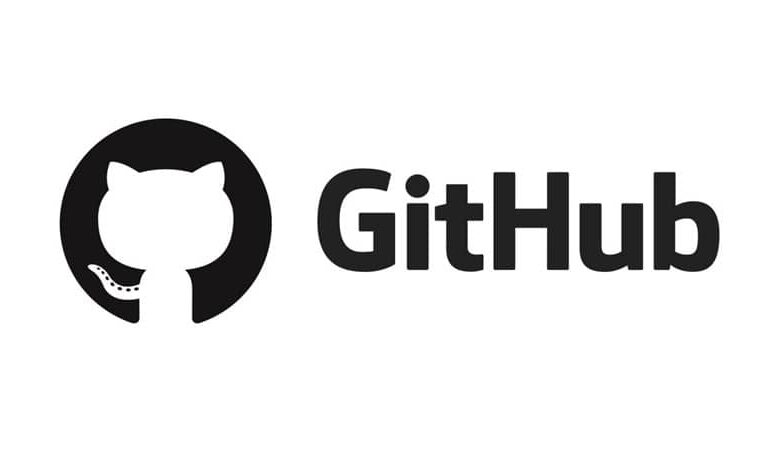

Лабораторные работы по дисциплине
"Интернет-технологии"
Лабораторная работа №1

Знакомство с основными инструментами и нотациями
Ссылки на веб-ресурсы
Landing Page
Лабораторная работа №2
IT Проект
Исходный код
Landing Page
Лабораторная работа №3
Работа с Сisco Packet Tracer
Сценарий CPT
Отчет